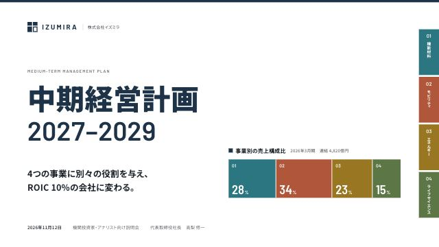
章色インデックスcolor-index
紺を骨格に事業ごとに1色。天罫・■見出し・グラフ・右端の爪見出しが章の色に切り替わる。
- 向く場面
- 中期経営計画、複数事業の会社案内、事業別の長い報告書
- 書体
- Noto Sans JP / Barlow / Barlow Semi Condensed
- 色
FRONTEND-SLIDES-JP · STYLES
11種のスタイルを用途ごとに並べています。表紙を押すと4枚の見本が開き、矢印キーで送れます。使いたいスタイルは名前か右の英字名でスキルに伝えてください。
会社紹介・経営計画・公式報告
3
color-index紺を骨格に事業ごとに1色。天罫・■見出し・グラフ・右端の爪見出しが章の色に切り替わる。
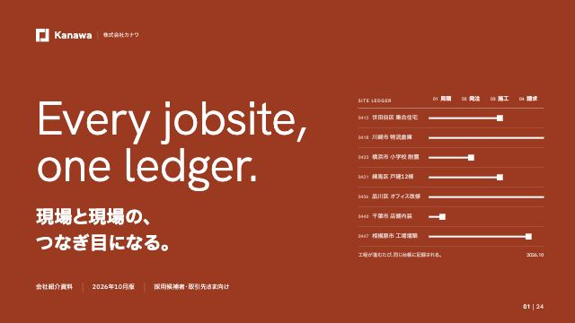
corporate-mono白地に弁柄1色。全面の扉、左の縦帯の章ナビ、グラフの濃淡の3役にだけ色を使う。
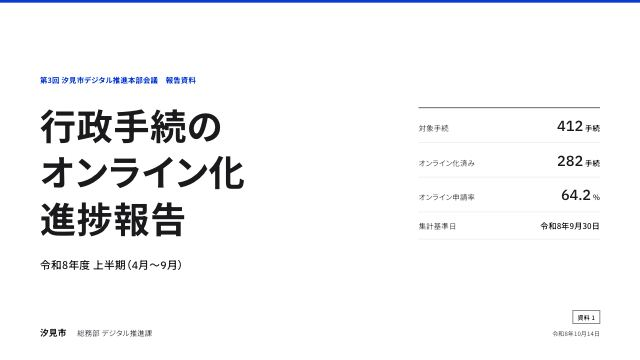
public-standard装飾ゼロ。12カラム、8pxの余白スケール、3段の罫線、精密な和欧組版だけで品位を出す。
テック企業・研究開発・技術説明
2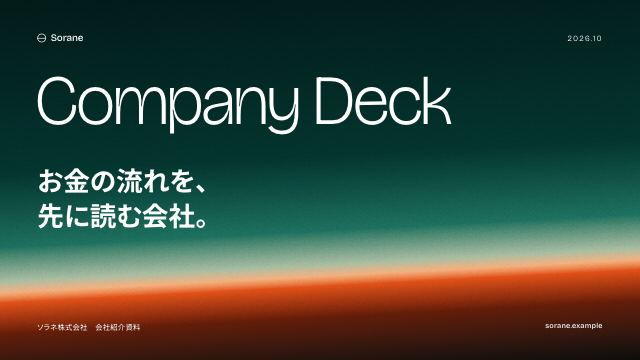
gate-gradient扉だけが深い松葉色の空と朱の水平線。本文は白地に墨と朱の1色。
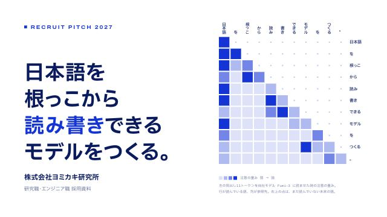
geometric-blueモチーフは飾りではなくデータ。表紙の格子は見出しをモデルに読ませた注意の重みを描く。
カンファレンス・製品発表・イベント
3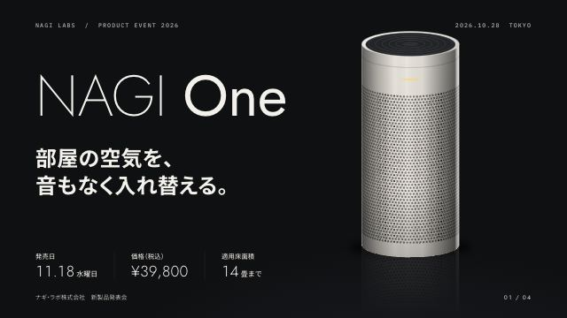
dark-keynote黒に近い面に製品を1つ。細い巨大な数字で仕様を見せる製品発表の型。
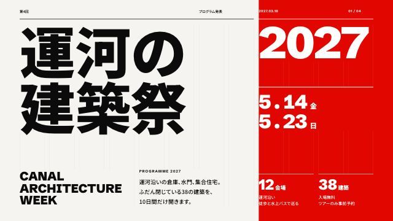
swiss-grid12列×6段のグリッドを見せ、全要素をその線に揃える。黒・白・信号赤のポスター。
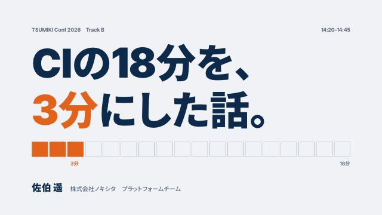
talk-one-message明るい地に極太の結論を1枚に1つ。時間はすべて「1マス＝1分」で描く。
ブランドブック・思想・周年
3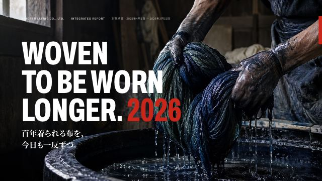
photo-editorial写真が色を運び、紙面は白・黒・赤の3色。欧文の大文字が名乗り、明朝が語る。
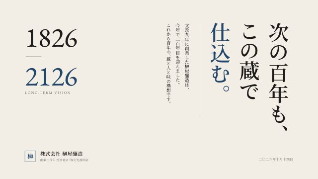
tategumi-editorial見出しと地の文は縦組みで右から左へ。データだけを横組みの島として左に置く。
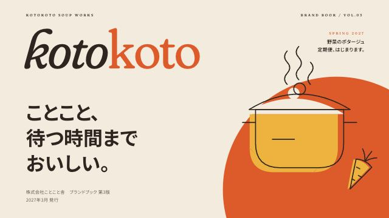
warm-editorialクリーム地に端へ寄せた円を1つ。イラストは塗りと線を2回描き、版ずれの手触りで揃える。
条件に合うスタイルはありません。